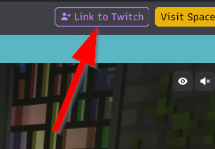
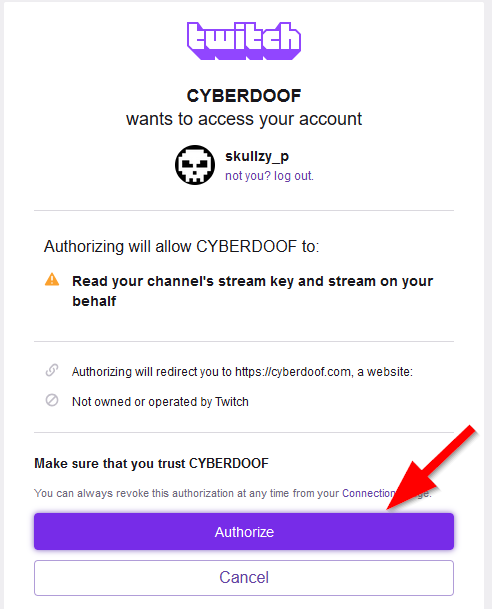
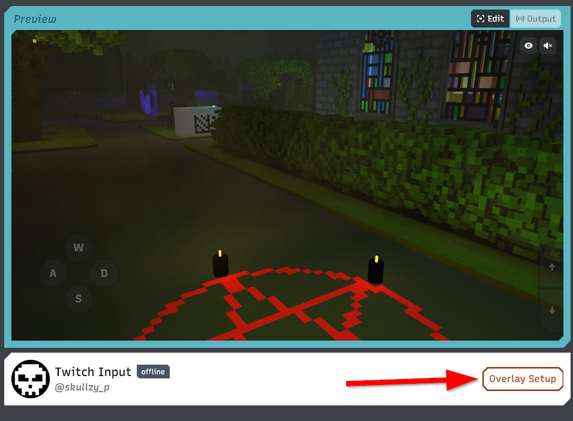
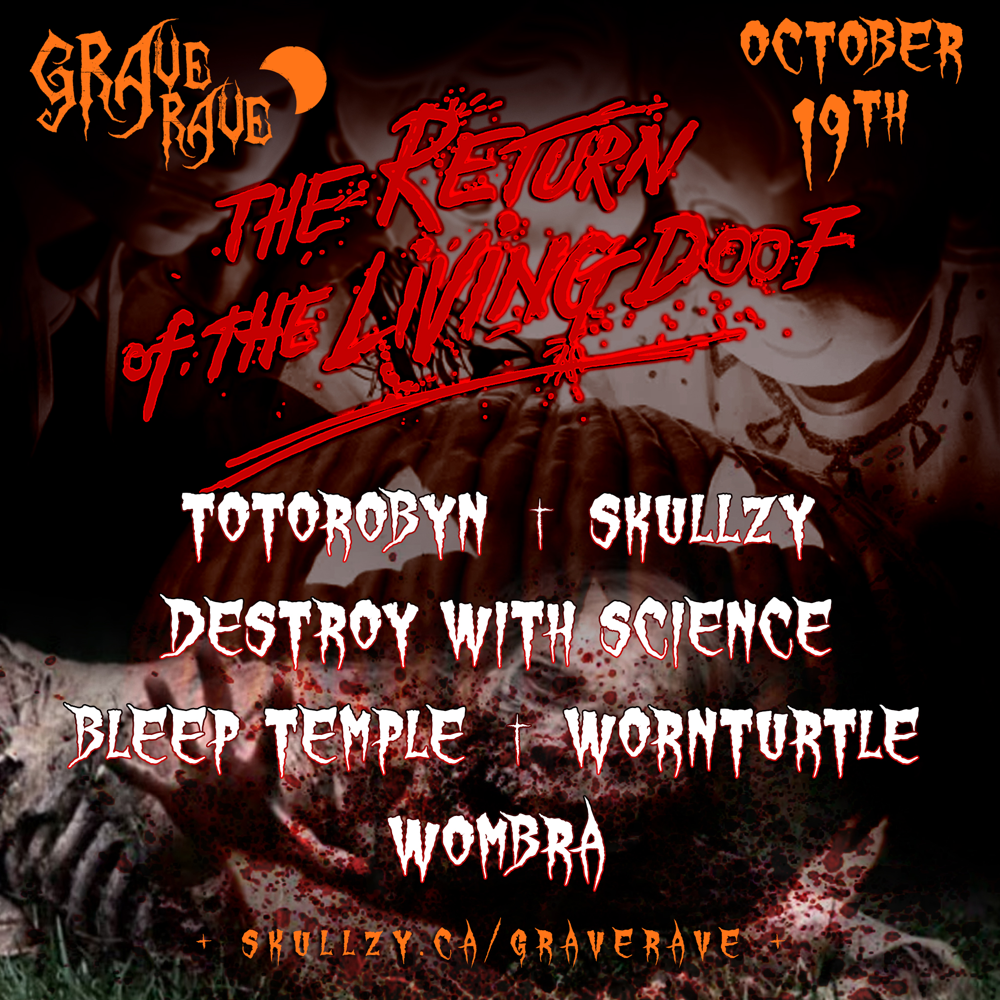
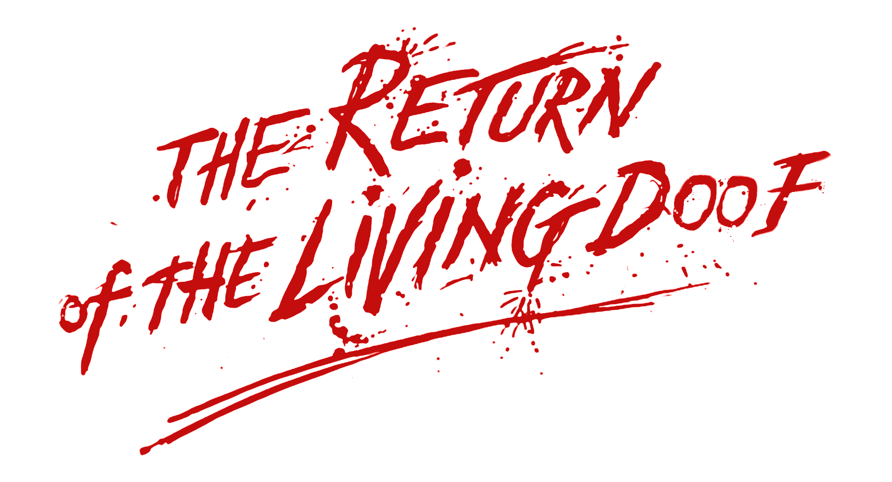
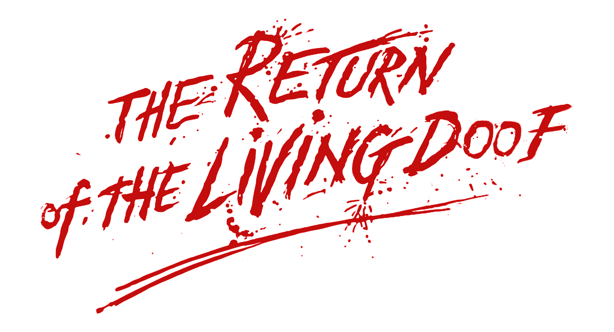

Grave Rave Backstage
Cyberdoof Performer Setup
- Go to the performer link you received via DM.
-
Click the "link to twitch" button in the performer interface.
Screenshot
 -
Log into Twitch and authorize the connection to cyberdoof.
Screenshot
 -
Get instructions for adding the browser overaly in OBS by clicking the overlay button
Screenshot

Branding
- Include “Grave Rave 2024 - The Return of the Living Doof” somewhere in your stream title.
-
Include a link to the official landing page when promoting the event.
https://skullzy.ca/graverave
Image Assets


 

Raid Train Protocol
- Start your stream at least 5 minutes early.
- Ensure the person playing directly after you is live and ready before raiding.
- Turn off chat restrictions. See below for more details.
Raid Restrictions
-
Turn off any raid restrictions to prevent issues furing the event.
Screenshot

Chat Restrictions
-
Turn off follower-only mode and subscribers-only chat.
Screenshot

-
Set verification to Twitch minimum recommendation or less. Phone verification in particular can be problematic for people and it is recommended to turn it off entirely.
Screenshot